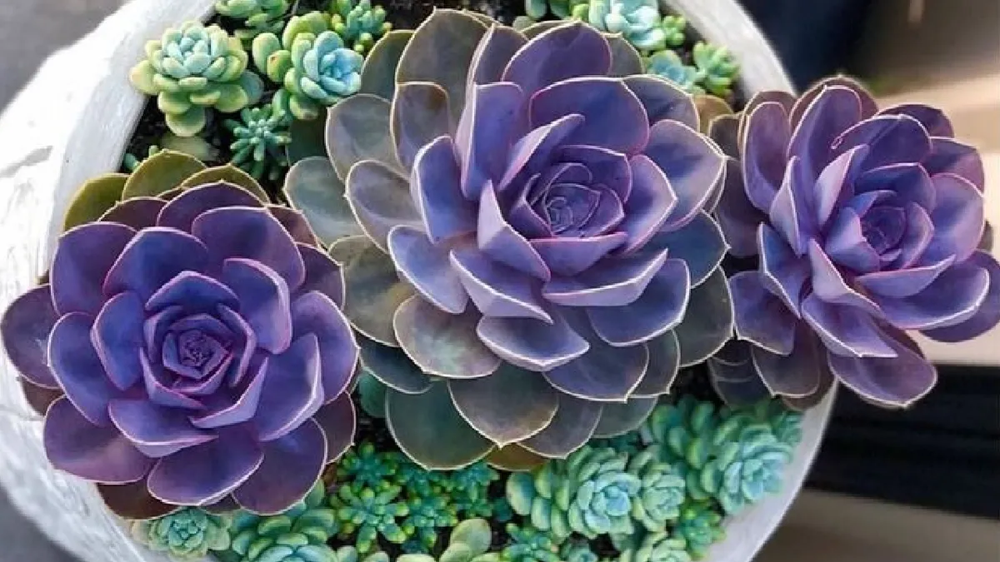
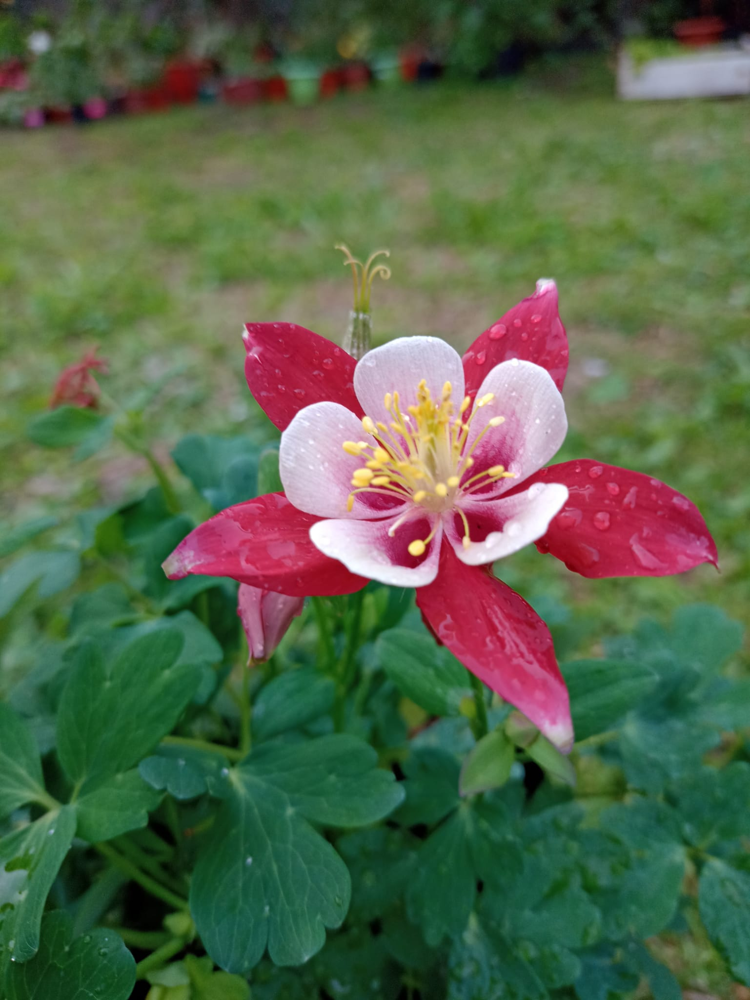
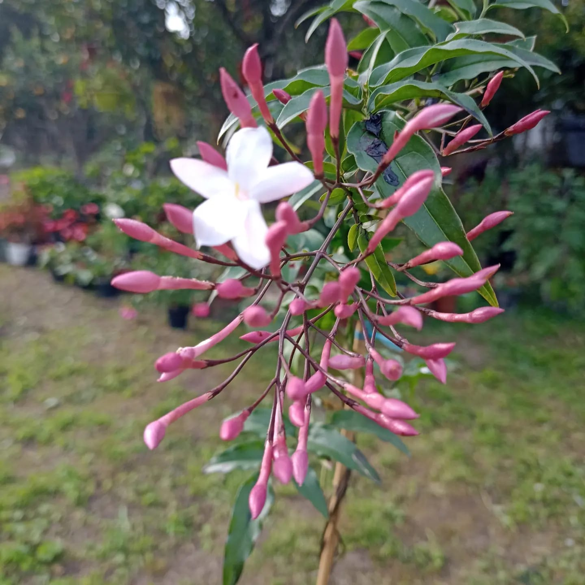

¡Bienvenidos a Nuestro Vivero!
¡En caprichos de paso amamos las plantas! Por ese motivo te brindamos materiales e información para que cuides de la mejor manera las tuyas.
En este sitio encontrarás todo lo que busques desde macetas, tierra y hasta diferentes tipo de herramientas de jardín que te ayudarán a mantener o reavivar todas tus plantas y mejorar el aspecto de tu jardín.


